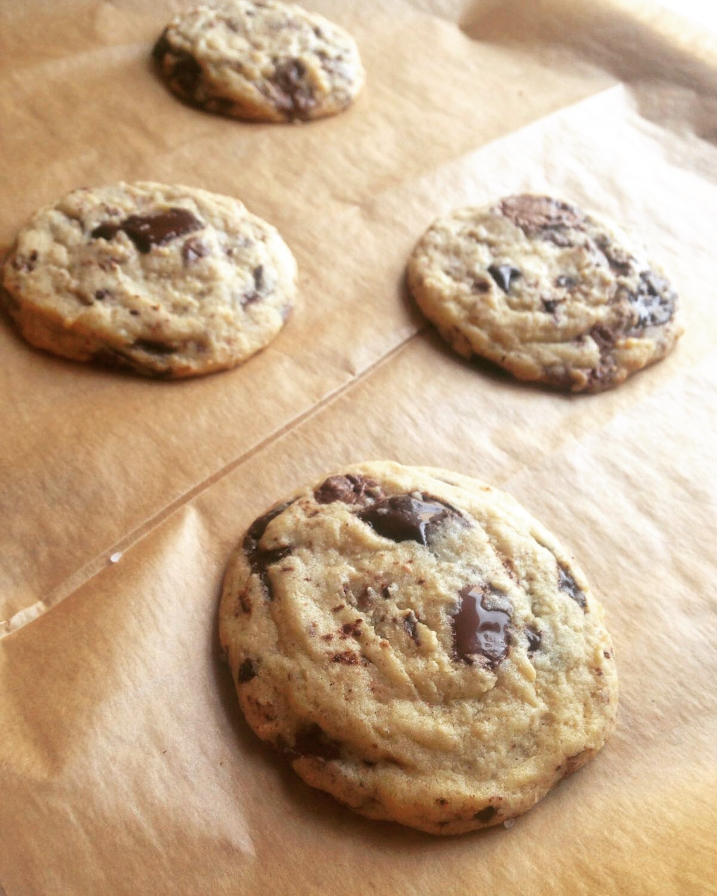

Chocolate Chip Cookies

Description
Bring your CCC game to a whole 'nother level. What takes them there?
Using chopped chocolate instead of chips creates scrumptious layers
of chocolate in each bite. The equal amounts of dark and milk chocolate
provide an intense chocolate flavor along with some wonderful caramel notes.
The dough is basically just there to keep all the chocolate together.
And last but not least - a generous pinch of coarse sea salt on top
gives you everything you didn't even know you needed.
Ingredients:
- 115g butter
- 165g brown sugar
- 25g white (vanilla) sugar
- 1 large egg
- 190g flour
- 1/2 tsp baking soda
- 1/2 teaspon salt
- 125g dark chocolate, chopped into 1cm squares
- 100g milk chocolate, chopped into 1cm squares
- coarse sea salt to sprinkle on top
Steps:
- Preheat oven to 165 C.
- In a large bowl, whip butter and sugars together with a handheld mixer for two minutes.
- Scrape down the sides of the bowl, add the egg and mix again until well incorporated, another 30sec.
- Add flour, baking soda and salt. Mix on the lowest speed until there's barely any visible flour left.
- Throw in all the chocolate chunks and mix until evenly distributed.
- With the help of an ice cream scoop or a kitchen scale, form the dough into 45g cookie balls.
- Arrange as many cookies as you intend to eat/serve on a baking sheet covered with baking paper,
leaving 3cm on each side of each cookie.
- Sprinkle each cookie with a generous pinch of coarse sea salt.
- Bake cookies for 11-12min.
- If you aren't baking all the cookies right now, arrange the dough balls on a plate covered with
baking paper and place in the freezer (without the pinch of salt on top).
Once frozen, transfer them to a ziplock bag. To bake, follow steps 1, 7 and 8.
No additional baking time necessary.